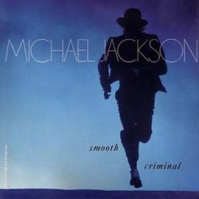

|  |
|
(Lyrics) As he came into the window Was a sound of a crescendo He came into her apartment He left the bloodstains on the carpet She ran underneath the table He could see she was unable So she ran into the bedroom She was struck down It was her doom Annie, are you OK So Annie, are you OK Are you OK, Annie Annie, are you OK So Annie, are you OK Are you OK, Annie Annie, are you OK So Annie, are you OK Are you OK, Annie Annie, are you OK So Annie, are you OK Are you OK, Annie Annie, are you OK Will you tell us that you're OK There's a sign at the window That he struck you A crescendo, Annie He came into your apartment He left the bloodstains on the carpet Then you ran into the bedroom You were struck down It was your doom Annie, are you OK So Annie, are you OK Are you OK, Annie Annie, are you OK So Annie, are you OK Are you OK, Annie Annie, are you OK So Annie, are you OK Are you OK, Annie You've been hit by You've been hit by A smooth criminal So they came into the outway It was Sunday What a black day Mouth to mouth resuscitation Sounding heartbeats Intimidations Annie, are you OK So Annie, are you OK Are you OK, Annie Annie, are you OK So Annie, are you OK Are you OK, Annie Annie, are you OK So Annie, are you OK Are you OK, Annie Annie, are you OK So Annie, are you OK Are you OK, Annie Annie, are you OK Will you tell us that you're OK There's a sign at the window That he struck you A crescendo, Annie He came into your apartment He left the bloodstains on the carpet Then you ran into the bedroom You were struck down It was your doom Annie, are you OK So Annie, are you OK Are you OK, Annie You've been hit by You've been struck by A smooth criminal "Okay, I want everybody To clear the area right now" I don't know I don't know I don't know I don't know I don't know I don't know why, baby I don't know Dad gone it, daddy Dad gone it, baby Dad gone it, daddy Dad gone it Dad gone it. |
(Letra en Español) Mientras él viene en la ventana Había un sonido de un crescendo Él entró a si departamento Él dejó las manchas de sangre en la alfombra Ella corrió debajo de la mesa Él pudo ver que ella estaba imposibilitada Pues ella corrió dentro del dormitorio Ella se golpeó Era su sentencia Annie, ¿estás bien? Annie, ¿estás bien? ¿Estás bien Annie? Annie, ¿estás bien? Annie, ¿estás bien? ¿Estás bien Annie? Annie, ¿estás bien? Annie, ¿estás bien? ¿Estás bien Annie? Annie, ¿estás bien? Annie, ¿estás bien? ¿Estás bien Annie? Annie, ¿estás bien? ¿Nos dirás que estás bien? Hay una señal en la ventana Que él te golpeó A crescendo, Annie Él entró en tu apartamento Él dejó las manchas de sangre en la alfombra Entonces corriste dentro del dormitorio Te golpeaste Era tu sentencia Annie, ¿estás bien? Annie, ¿estás bien? ¿Estás bien Annie? Annie, ¿estás bien? Annie, ¿estás bien? ¿Estás bien Annie? Annie, ¿estás bien? Annie, ¿estás bien? ¿Estás bien Annie? Has sido golpeada por Has sido golpeada por Un criminal suave Pues ellos vinieron en la salida Era domingo Que día negro Resucitación boca a boca Sonando latidos de corazón Intimidaciones Annie, ¿estás bien? Annie, ¿estás bien? ¿Estás bien Annie? Annie, ¿estás bien? Annie, ¿estás bien? ¿Estás bien Annie? Annie, ¿estás bien? Annie, ¿estás bien? ¿Estás bien Annie? Annie, ¿estás bien? Annie, ¿estás bien? ¿Estás bien Annie? Annie, ¿estás bien? ¿Nos dirás que estás bien? Hay una señal en la ventana Que él te golpeó A crescendo, Annie Él entró en tu apartamento Él dejó las manchas de sangre en la alfombra Entonces corriste dentro del dormitorio Te golpeaste Era tu sentencia Annie, ¿estás bien? Annie, ¿estás bien? ¿Estás bien Annie? Has sido golpeada por Has sido golpeada por Un criminal suave "Bien, quiero que todos limpien el área ahora" No sé ,No sé No sé ,No sé No sé por qué, nena No sé Papi se fue, papi Papi se fue, nena Papi se fue, papi Papi se fue Papi se fue. |